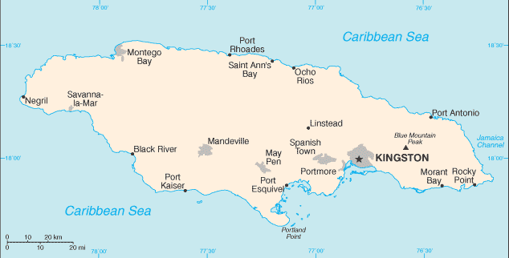
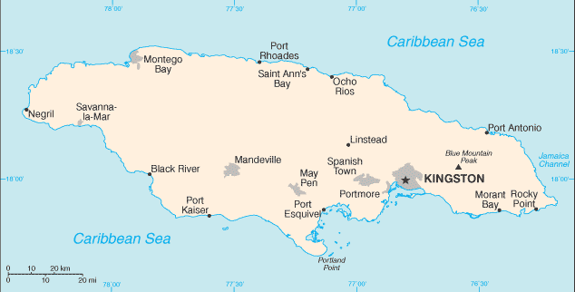

Central America and Caribbean :: JAMAICA
Introduction :: JAMAICA
-
The island - discovered by Christopher COLUMBUS in 1494 - was settled by the Spanish early in the 16th century. The native Taino, who had inhabited Jamaica for centuries, were gradually exterminated and replaced by African slaves. England seized the island in 1655 and established a plantation economy based on sugar, cocoa, and coffee. The abolition of slavery in 1834 freed a quarter million slaves, many of whom became small farmers. Jamaica gradually increased its independence from Britain. In 1958 it joined other British Caribbean colonies in forming the Federation of the West Indies. Jamaica gained full independence when it withdrew from the Federation in 1962. Deteriorating economic conditions during the 1970s led to recurrent violence as rival gangs affiliated with the major political parties evolved into powerful organized crime networks involved in international drug smuggling and money laundering. Violent crime, drug trafficking, and poverty pose significant challenges to the government today. Nonetheless, many rural and resort areas remain relatively safe and contribute substantially to the economy.
Geography :: JAMAICA
-
Caribbean, island in the Caribbean Sea, south of Cuba18 15 N, 77 30 WCentral America and the Caribbeantotal: 10,991 sq kmland: 10,831 sq kmwater: 160 sq kmcountry comparison to the world: 167about half the size of New Jersey; slightly smaller than Connecticut0 km1,022 kmmeasured from claimed archipelagic straight baselinesterritorial sea: 12 nmcontiguous zone: 24 nmexclusive economic zone: 200 nmcontinental shelf: 200 nm or to edge of the continental margintropical; hot, humid; temperate interiormostly mountains, with narrow, discontinuous coastal plainmean elevation: 18 melevation extremes: lowest point: Caribbean Sea 0 mhighest point: Blue Mountain Peak 2,256 mbauxite, gypsum, limestoneagricultural land: 41.4%arable land 11.1%; permanent crops 9.2%; permanent pasture 21.1%forest: 31.1%other: 27.5% (2011 est.)250 sq km (2012)population density is high throughout, but increases in and around Kingston, Montego Bay, and Port Esquivelhurricanes (especially July to November)heavy rates of deforestation; coastal waters polluted by industrial waste, sewage, and oil spills; damage to coral reefs; air pollution in Kingston from vehicle emissionsparty to: Biodiversity, Climate Change, Climate Change-Kyoto Protocol, Desertification, Endangered Species, Hazardous Wastes, Law of the Sea, Marine Dumping, Marine Life Conservation, Ozone Layer Protection, Ship Pollution, Wetlandssigned, but not ratified: none of the selected agreementsthird largest island in the Caribbean (after Cuba and Hispaniola); strategic location between Cayman Trench and Jamaica Channel, the main sea lanes for the Panama Canal
People and Society :: JAMAICA
-
2,990,561 (July 2017 est.)country comparison to the world: 138noun: Jamaican(s)adjective: Jamaicanblack 92.1%, mixed 6.1%, East Indian 0.8%, other 0.4%, unspecified 0.7% (2011 est.)English, English patoisProtestant 64.8% (includes Seventh Day Adventist 12.0%, Pentecostal 11.0%, Other Church of God 9.2%, New Testament Church of God 7.2%, Baptist 6.7%, Church of God in Jamaica 4.8%, Church of God of Prophecy 4.5%, Anglican 2.8%, United Church 2.1%, Methodist 1.6%, Revived 1.4%, Brethren 0.9%, and Moravian 0.7%), Roman Catholic 2.2%, Jehovah's Witness 1.9%, Rastafarian 1.1%, other 6.5%, none 21.3%, unspecified 2.3% (2011 est.)0-14 years: 27.17% (male 413,325/female 399,190)15-24 years: 20.79% (male 312,400/female 309,477)25-54 years: 38.17% (male 564,414/female 577,059)55-64 years: 5.85% (male 84,271/female 90,612)65 years and over: 8.02% (male 107,310/female 132,503) (2017 est.)total dependency ratio: 48.7youth dependency ratio: 34.9elderly dependency ratio: 13.8potential support ratio: 7.2 (2015 est.)total: 26 yearsmale: 25.5 yearsfemale: 26.5 years (2017 est.)country comparison to the world: 1510.68% (2017 est.)country comparison to the world: 14517.9 births/1,000 population (2017 est.)country comparison to the world: 996.8 deaths/1,000 population (2017 est.)country comparison to the world: 135-4.3 migrant(s)/1,000 population (2017 est.)country comparison to the world: 185population density is high throughout, but increases in and around Kingston, Montego Bay, and Port Esquivelurban population: 55.3% of total population (2017)rate of urbanization: 0.93% annual rate of change (2015-20 est.)KINGSTON (capital) 588,000 (2015)at birth: 1.05 male(s)/female0-14 years: 1.04 male(s)/female15-24 years: 1.01 male(s)/female25-54 years: 0.98 male(s)/female55-64 years: 0.93 male(s)/female65 years and over: 0.81 male(s)/femaletotal population: 0.98 male(s)/female (2016 est.)21.2 yearsnote: median age at first birth among women 25-29 (2008 est.)89 deaths/100,000 live births (2015 est.)country comparison to the world: 77total: 12.8 deaths/1,000 live birthsmale: 13.4 deaths/1,000 live birthsfemale: 12.3 deaths/1,000 live births (2017 est.)country comparison to the world: 111total population: 73.7 yearsmale: 72.1 yearsfemale: 75.4 years (2017 est.)country comparison to the world: 1301.96 children born/woman (2017 est.)country comparison to the world: 12672.5% (2008/09)5.4% of GDP (2014)country comparison to the world: 1300.41 physicians/1,000 population (2008)1.7 beds/1,000 population (2012)improved:urban: 97.5% of populationrural: 89.4% of populationtotal: 93.8% of populationunimproved:urban: 2.5% of populationrural: 10.6% of populationtotal: 6.2% of population (2015 est.)improved:urban: 79.9% of populationrural: 84.1% of populationtotal: 81.8% of populationunimproved:urban: 20.1% of populationrural: 15.9% of populationtotal: 18.2% of population (2015 est.)1.7% (2016 est.)country comparison to the world: 3030,000 (2016 est.)country comparison to the world: 671,300 (2016 est.)country comparison to the world: 60note: active local transmission of Zika virus by Aedes species mosquitoes has been identified in this country (as of August 2016); it poses an important risk (a large number of cases possible) among US citizens if bitten by an infective mosquito; other less common ways to get Zika are through sex, via blood transfusion, or during pregnancy, in which the pregnant woman passes Zika virus to her fetus (2016)24.7% (2016)country comparison to the world: 552.5% (2012)country comparison to the world: 1125.4% of GDP (2015)country comparison to the world: 40definition: age 15 and over has ever attended schooltotal population: 88.7%male: 84%female: 93.1% (2015 est.)total: 37.8%male: 32.4%female: 43.8% (2013 est.)country comparison to the world: 20
Government :: JAMAICA
-
conventional long form: noneconventional short form: Jamaicaetymology: from the native Taino word "haymaca" meaning "Land of Wood and Water" or possibly "Land of Springs"parliamentary democracy (Parliament) under a constitutional monarchy; a Commonwealth realmname: Kingstongeographic coordinates: 18 00 N, 76 48 Wtime difference: UTC-5 (same time as Washington, DC, during Standard Time)14 parishes; Clarendon, Hanover, Kingston, Manchester, Portland, Saint Andrew, Saint Ann, Saint Catherine, Saint Elizabeth, Saint James, Saint Mary, Saint Thomas, Trelawny, Westmorelandnote: for local government purposes, Kingston and Saint Andrew were amalgamated in 1923 into the present single corporate body known as the Kingston and Saint Andrew Corporation6 August 1962 (from the UK)Independence Day, 6 August (1962)several previous (preindependence); latest drafted 1961-62, submitted to British Parliament 24 July 1962, entered into force 6 August 1962 (at independence); amended many times, last in 2015 (2016)common law system based on the English modelhas not submitted an ICJ jurisdiction declaration; non-party state to the ICCtcitizenship by birth: yescitizenship by descent: yesdual citizenship recognized: yesresidency requirement for naturalization: 4 out of the previous 5 years18 years of age; universalchief of state: Queen ELIZABETH II (since 6 February 1952); represented by Governor General Dr. Patrick L. ALLEN (since 26 February 2009)head of government: Prime Minister Andrew HOLNESS (since 3 March 2016)cabinet: Cabinet appointed by the governor general on the advice of the prime ministerelections/appointments: the monarchy is hereditary; governor general appointed by the monarch on the recommendation of the prime minister; following legislative elections, the leader of the majority party or majority coalition in the House of Representatives is appointed prime minister by the governor generaldescription: bicameral Parliament consists of the Senate (21 seats; members appointed by the governor general on the recommendation of the prime minister and the minority party leader, 13 seats allocated to the ruling party, and 8 seats allocated to the minority party; members serve 5-year terms) and the House of Representatives (63 seats; members directly elected in single-seat constituencies by simple majority vote to serve 5-year terms)elections: last held on 25 February 2016 (next to be held no later than February 2021)election results: percent of vote by party - JLP 50.1%, PNP 49.7%, other 0.2%; seats by party - JLP 32, PNP 31highest resident court(s): Court of Appeal (consists of president of the court and a minimum of 4 judges; Supreme Court (40 judges organized in specialized divisions); note - appeals beyond Jamaica's highest courts are referred to the Judicial Committee of the Privy Council (in London) rather than to the Caribbean Court of Justice (the appellate court implemented for member states of the Caribbean Community)judge selection and term of office: chief justice of the Supreme Court and president of the Court of Appeal appointed by the governor-general on the advice of the prime minister; other judges of both courts appointed by the governor-general on the advice of the Judicial Service Commission; judges of both courts serve till age 70subordinate courts: resident magistrate courts, district courts, and petty sessions courtsJamaica Labor Party or JLP [Andrew HOLNESS]People's National Party or PNP [Dr. Peter David PHILLIPS]National Democratic Movement or NDM [Peter TOWNSEND]New Beginnings Movement or NBMRastafariansACP, AOSIS, C, Caricom, CDB, CELAC, FAO, G-15, G-77, IADB, IAEA, IBRD, ICAO, ICC (NGOs), ICRM, IDA, IFAD, IFC, IFRCS, IHO, ILO, IMF, IMO, Interpol, IOC, IOM, ISO, ITSO, ITU, LAES, MIGA, NAM, OAS, OPANAL, OPCW, Petrocaribe, UN, UNCTAD, UNESCO, UNIDO, UNITAR, UNWTO, UPU, WCO, WFTU (NGOs), WHO, WIPO, WMO, WTOchief of mission: Ambassador Audrey Patrice MARKS (since 18 January 2017)chancery: 1520 New Hampshire Avenue NW, Washington, DC 20036telephone: [1] (202) 452-0660FAX: [1] (202) 452-0036consulate(s) general: Miami, New Yorkconsulate(s): Atlanta, Boston, Chicago, Concord (MA), Houston, Los Angeles, Philadelphia (PA), Richmond (VA), San Francisco, Seattlechief of mission: Ambassador (vacant); Charge d'Affaires Eric KHANT (since 30 June 2017)embassy: 142 Old Hope Road, Kingston 6mailing address: P.O. Box 541, Kingston 5telephone: [1] (876) 702-6000FAX: [1] (876) 702-6348diagonal yellow cross divides the flag into four triangles - green (top and bottom) and black (hoist side and fly side); green represents hope, vegetation, and agriculture, black reflects hardships overcome and to be faced, and yellow recalls golden sunshine and the island's natural resourcesgreen-and-black streamertail (bird), Guaiacum officinale (Guaiacwood); national colors: green, yellow, blackname: "Jamaica, Land We Love"lyrics/music: Hugh Braham SHERLOCK/Robert Charles LIGHTBOURNEnote: adopted 1962
Economy :: JAMAICA
-
The Jamaican economy is heavily dependent on services, which accounts for more than 70% of GDP. The country continues to derive most of its foreign exchange from tourism, remittances, and bauxite/alumina. Earnings from remittances and tourism each account for about 15% of GDP, while bauxite/alumina exports have declined to less than 5% of GDP.Jamaica's economy has grown on average less than 1% a year for the last three decades and many impediments remain to growth: a bloated public sector which crowds out spending on important projects; high crime and corruption; red-tape; and a high debt-to-GDP ratio. Jamaica, however, has made steady progress in reducing its debt-to-GDP ratio from a high of almost 150% in 2012 to about 115% in 2017, in close collaboration with the International Monetary Fund. The existing Stand By Agreement requires Jamaica to produce an annual primary surplus of 7%, in an attempt to reduce its debt burden below 60% by 2025.Economic growth reached 1.6% in 2016. The HOLNESS administration faces the difficult prospect of maintaining fiscal discipline to make debt payments while simultaneously attacking a serious crime problem. High unemployment exacerbates the crime problem, including gang violence fueled by the drug trade.$25.33 billion (2016 est.)$24.69 billion (2015 est.)$24.2 billion (2014 est.)note: data are in 2016 dollarscountry comparison to the world: 139$13.96 billion (2016 est.)1.3% (2016 est.)0.9% (2015 est.)0.5% (2014 est.)country comparison to the world: 153$9,000 (2016 est.)$8,900 (2015 est.)$8,800 (2014 est.)note: data are in 2016 dollarscountry comparison to the world: 14217% of GDP (2016 est.)18.1% of GDP (2015 est.)14.1% of GDP (2014 est.)country comparison to the world: 87household consumption: 81.3%government consumption: 13.7%investment in fixed capital: 21.1%investment in inventories: 0.1%exports of goods and services: 29.3%imports of goods and services: -45.5% (2016 est.)agriculture: 7.2%industry: 21.3%services: 71.4% (2016 est.)sugarcane, bananas, coffee, citrus, yams, ackees, vegetables; poultry, goats, milk; shellfishtourism, bauxite/alumina, agricultural-processing, light manufactures, rum, cement, metal, paper, chemical products, telecommunications1.7% (2016 est.)country comparison to the world: 1191.321 million (2016 est.)country comparison to the world: 135agriculture: 17%industry: 19%services: 64% (2006)12.8% (2016 est.)13.5% (2015 est.)country comparison to the world: 16116.5% (2009 est.)lowest 10%: 2.1%highest 10%: 35.8% (2004)45.5 (2004)37.9 (2000)country comparison to the world: 38revenues: $3.995 billionexpenditures: $3.922 billion (2016 est.)28.6% of GDP (2016 est.)country comparison to the world: 900.5% of GDP (2016 est.)country comparison to the world: 34127.1% of GDP (2016 est.)122.7% of GDP (2015 est.)country comparison to the world: 61 April - 31 March2.3% (2016 est.)3.7% (2015 est.)country comparison to the world: 1292% (31 December 2010)country comparison to the world: 11516.5% (31 December 2016 est.)16.98% (31 December 2015 est.)country comparison to the world: 29$3.409 billion (31 December 2016 est.)$3.542 billion (31 December 2015 est.)country comparison to the world: 112$8.429 billion (31 December 2016 est.)$8.182 billion (31 December 2015 est.)country comparison to the world: 110$7.343 billion (31 December 2016 est.)$6.881 billion (31 December 2015 est.)country comparison to the world: 114$6.39 billion (31 December 2012 est.)$7.223 billion (31 December 2011 est.)$6.626 billion (31 December 2010 est.)country comparison to the world: 82$-309 million (2016 est.)$-430 million (2015 est.)country comparison to the world: 76$1.195 billion (2016 est.)$1.255 billion (2015 est.)country comparison to the world: 153alumina, bauxite, sugar, rum, coffee, yams, beverages, chemicals, apparel, mineral fuelsUS 40.8%, Canada 11.9%, Netherlands 10.2%, Russia 5.8%, UK 4.1% (2016)$4.169 billion (2016 est.)$4.449 billion (2015 est.)country comparison to the world: 129food and other consumer goods, industrial supplies, fuel, parts and accessories of capital goods, machinery and transport equipment, construction materialsUS 39%, Trinidad and Tobago 7.2%, China 6.4%, Japan 6.2%, Mexico 4.1% (2016)$3.291 billion (31 December 2016 est.)$2.914 billion (31 December 2015 est.)country comparison to the world: 102$15.17 billion (31 December 2016 est.)$14.27 billion (31 December 2015 est.)country comparison to the world: 101Jamaican dollars (JMD) per US dollar -125.126 (2016 est.)125.126 (2015 est.)116.898 (2014 est.)110.935 (2013 est.)88.75 (2012 est.)
Energy :: JAMAICA
-
population without electricity: 200,000electrification - total population: 93%electrification - urban areas: 98%electrification - rural areas: 87% (2013)3.894 billion kWh (2015 est.)country comparison to the world: 1262.757 billion kWh (2015 est.)country comparison to the world: 1380 kWh (2016 est.)country comparison to the world: 1530 kWh (2016 est.)country comparison to the world: 164988,000 kW (2015 est.)country comparison to the world: 12888.5% of total installed capacity (2015 est.)country comparison to the world: 650% of total installed capacity (2015 est.)country comparison to the world: 1163% of total installed capacity (2015 est.)country comparison to the world: 13313% of total installed capacity (2015 est.)country comparison to the world: 560 bbl/day (2016 est.)country comparison to the world: 1510 bbl/day (2014 est.)country comparison to the world: 14319,160 bbl/day (2014 est.)country comparison to the world: 640 bbl (1 January 2017 es)country comparison to the world: 15019,760 bbl/day (2014 est.)country comparison to the world: 9154,000 bbl/day (2015 est.)country comparison to the world: 102845.3 bbl/day (2014 est.)country comparison to the world: 11034,170 bbl/day (2014 est.)country comparison to the world: 980 cu m (2013 est.)country comparison to the world: 1510 cu m (2013 est.)country comparison to the world: 1950 cu m (2013 est.)country comparison to the world: 1260 cu m (2013 est.)country comparison to the world: 1420 cu m (1 January 2014 es)country comparison to the world: 15413 million Mt (2013 est.)country comparison to the world: 96
Communications :: JAMAICA
-
total subscriptions: 310,213subscriptions per 100 inhabitants: 10 (July 2016 est.)country comparison to the world: 122total: 3,267,344subscriptions per 100 inhabitants: 110 (July 2016 est.)country comparison to the world: 140general assessment: fully automatic domestic telephone networkdomestic: the 1999 agreement to open the market for telecommunications services resulted in rapid growth in mobile-cellular telephone usage while the number of fixed lines in use has declined; combined fixed-line and mobile cellular teledensity exceeds 120 per 100 personsinternational: country code - 1-876; the Fibralink submarine cable network provides enhanced delivery of business and broadband traffic and is linked to the Americas Region Caribbean Ring System (ARCOS-1) submarine cable in the Dominican Republic; the link to ARCOS-1 provides seamless connectivity to US, parts of the Caribbean, Central America, and South America; the ALBA-1 fiber-optic submarine cable links Jamaica, Cuba, and Venezuela; satellite earth stations - 2 Intelsat (Atlantic Ocean) (2016)3 free-to-air TV stations, subscription cable services, and roughly 30 radio stations (2013).jmtotal: 1,336,653percent of population: 45.0% (July 2016 est.)country comparison to the world: 109
Transportation :: JAMAICA
-
number of registered air carriers: 2inventory of registered aircraft operated by air carriers: 5annual passenger traffic on registered air carriers: 92,836annual freight traffic on registered air carriers: 0 mt-km (2015)6Y (2016)28 (2013)country comparison to the world: 123total: 112,438 to 3,047 m: 2914 to 1,523 m: 4under 914 m: 5 (2017)total: 17914 to 1,523 m: 1under 914 m: 16 (2013)total: 22,121 km (includes 44 km of expressways)paved: 16,148 kmunpaved: 5,973 km (2011)country comparison to the world: 104total: 14by type: bulk carrier 4, cargo 5, container 4, roll on/roll off 1foreign-owned: 14 (Denmark 1, Germany 10, Greece 3) (2010)country comparison to the world: 103major seaport(s): Discovery Bay (Port Rhoades), Kingston, Montego Bay, Port Antonio, Port Esquivel, Port Kaiser, Rocky Pointcontainer port(s) (TEUs): Kingston (1,724,928)
Military and Security :: JAMAICA
-
0.82% of GDP (2016)0.83% of GDP (2015)0.87% of GDP (2014)0.9% of GDP (2013)0.93% of GDP (2012)country comparison to the world: 111Jamaica Defense Force: Ground Forces, Coast Guard, Air Wing (2010)17 1/2 is the legal minimum age for voluntary military service; no conscription (2012)
Transnational Issues :: JAMAICA
-
nonecurrent situation: Jamaica is a source and destination country for children and adults subjected to sex trafficking and forced labor; sex trafficking of children and adults occurs on the street, in night clubs, bars, massage parlors, and private homes; child sex tourism is a problem in resort areas; Jamaicans have been subjected to sexual exploitation or forced labor in the Caribbean, Canada, the US, and the UK, while foreigners have endured conditions of forced labor in Jamaica or aboard foreign-flagged fishing vessels operating in Jamaican waters; a high number of Jamaican children are reported missingtier rating: Tier 2 Watch List – Jamaica does not fully comply with the minimum standards for the elimination of trafficking; however, it is making significant efforts to do so; in 2014, the government made significant efforts to raise public awareness of human trafficking, and named a national trafficking-in-persons rapporteur – the first in the region; authorities initiated more new trafficking investigations than in 2013 and concluded a trafficking case in the Supreme Court, but chronic delays impeded prosecutions and no offenders were convicted for the sixth consecutive year; more adult trafficking victims were identified than in previous years, but only one child victim was identified, which was exceptionally low relative to the number of vulnerable children (2015)transshipment point for cocaine from South America to North America and Europe; illicit cultivation and consumption of cannabis; government has an active manual cannabis eradication program; corruption is a major concern; substantial money-laundering activity; Colombian narcotics traffickers favor Jamaica for illicit financial transactions